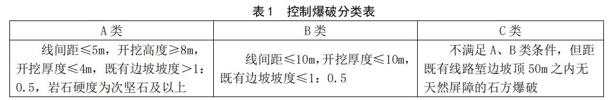
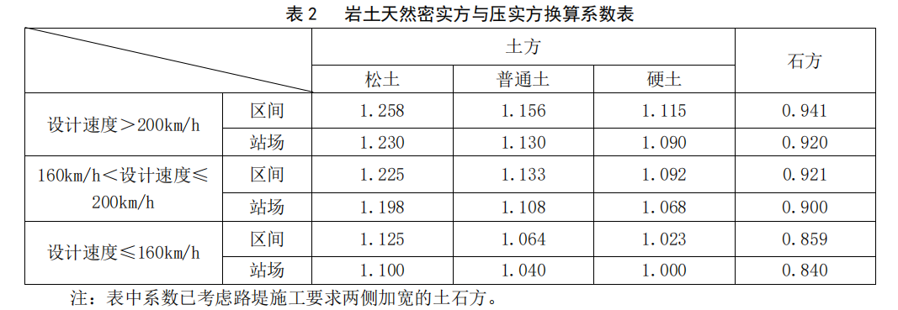
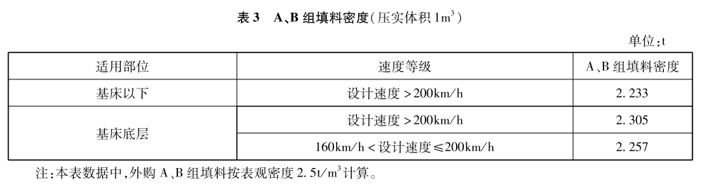

一、本章包括土方挖运,石方挖运,填方,场地清理、弃土(石)摊平碾压,淤泥挖运5节。
二、土石方挖运
（一）土石方开挖工程,除工作内容说明以外,另包括路堑修坡检底和取土坑整修等所需的人工、
材料、机械消耗量。
（二）装载机装运松土仅适用于20m范围以内松土的装、运、卸工作,超出20m范围应采用自卸
汽车运输。
（三）土石方运输已考虑道路系数(便道及交通干扰等因素),土石方工程中汽车增运定额仅适用于
运距10km及以内运输,超过10km部分乘以0.85的系数。
（四）深孔、浅孔爆破开挖石方,当作为弃方或需破碎后再填筑时,采用LY-46、47、48、52、53、
54子目,需破碎的,按填料破碎子目另计;当用于直接以挖作填时,采用LY-49、50、51、55、56、57子目。
（五）光面(预裂)爆破定额单位按设计边坡面积计算,应与其他石方开挖定额叠加使用。光面爆
破只适用于非控制爆破
（六）静态爆破定额与石方破解定额配套使用,人力或机械破解石方根据现场情况选择。
（七）控制爆破定额适用于邻近既有铁路增建二线需控制爆破的石方开挖工程。
1. 按施工条件不同分为A、B、C三类，分类见表1。

注：表中开挖高度为路肩至路堑边坡最高点的高度；开挖厚度为爆破体平均开挖厚度。
2. 定额中已考虑了要点封锁线路引起的工效降低因素，使用时不再计列行车干扰施工增加费。
（八）爆破体覆盖定额应按爆破设计确定覆盖组合方式和覆盖层数叠加使用。
（九）柔性防护网爆破体覆盖定额中柔性防护网材料消耗量已经考虑搭接和损耗数量。
（十）砂袋爆破体覆盖定额未含砂袋内填充料的消耗量，填充料费用根据爆破设计另计。
（十一）冻土开挖可按软石开挖定额执行。
（十二）工程量计量规则：
1. 开挖与运输数量以天然密实体积计量。
2. 光面（预裂）爆破数量按照设计边坡面积计量。
3. 爆破体覆盖工程数量根据爆破设计所需覆盖层数及覆盖组合方式，按爆破体覆盖面积以100m2计量。
4. 路堑开挖按照设计开挖线计量。
三、填方
（一）填料制备为集中场拌，填料制备与填筑定额应配套使用。
（二）填料运输子目仅适用于填料从大临场站至作业面的运输。
（三）填料物理改良拌和未含填料消耗量；水泥改良土、石灰改良土定额含水泥、石灰消耗量，未
含土方消耗量；级配碎石、水泥稳定碎石定额含全部材料消耗量。
（四）路基填料根据设计标准要求选用填料破碎定额。
（五）级配碎石制备子目是按碎石编制，若设计采用级配砂砾石，可抽换。
（六）零填挖路段翻松、整平、压实子目，适用于不做基底处理地段的原地面整理。
（七）路基填筑压实子目已包含一般情况下的洒水或晾晒内容，路基洒水定额适用于特殊缺水地区，
洒水量由设计确定。
（八）改良土和填料破碎应与土石方挖运子目配套使用，换算系数按表2执行。
（九）土石方工程定额单位，挖方及运输为天然密实方，填方为压（夯）实方。当以填方压实体积
为工程量，采用以天然密实方为计量单位的定额时，所采用的定额应乘以表2系数。

（十）外购填料填方时，填料定额消耗量按表3计算。

（十一）工程量计量规则：
1. 填料制备、填料运输及填筑压实工程数量按设计填筑断面以压实体积计量。
2. 填料破碎按压实方计量。
3. 护道土石方、需要预留的沉降数量计入填方数量。
4. 路基基底清表、碾压后，与原地面之间的回填土石方数量计入填方数量。
5. 路基洒水量按设计数量以“t”计量。
6. 零填挖路段翻松、整平、压实数量按设计面积计量。
7. 路堤刷坡收边数量按设计边坡面积计量。
8. 过渡段填筑压实工程数量按设计填筑断面以压实体积计量，包括过渡段外包体工程量。
四、场地清理、弃土（石）摊平碾压
（一）原地面清表是指对原地面以下30cm及以内的农作物、根系和表土的清除。
（二）挖除树根定额适用于离地面1.3m高处树干直径≥10cm的树木，其余均属原地面清表。
（三）清表和挖除的废弃物运至处理地点的运输应按相关定额子目另计。
（四）工程量计量规则：
1. 清表按设计处理地表面积计算。设计不需要清表的，按挖方计量；设计深度超过30cm时，30cm
以下按照按挖方计量。草皮灌木整体剥离的工艺，需根据设计另计。
2. 挖除树根数量按需挖除的棵数计量。
3. 弃土（石）摊平碾压按弃土方、弃石方的天然密实体积计量。
五、淤泥挖运
淤塘抽排水数量按抽排净水体积计量。
一、本章包括抗滑桩,重力式挡土墙,桩板挡土墙,锚杆挡土墙,加筋土挡土墙,扶壁式、悬臂式挡
土墙,土钉,预应力锚索,锚杆框架梁,挡土墙附属工程,脚手架11节。
二、挡土墙定额亦适用于护墙。
三、土钉定额中不含挂网和喷射混凝土，需要时应按相关定额子目另计。
四、预应力锚索定额中钻孔深度按单孔30m以内编制，如设计深度不同时，需另行分析。
五、工程量计量规则
1. 圬工体积按设计尺寸以实体体积计量，不扣除圬工中钢筋、钢绞线、预埋件和预留压浆孔道所
占体积。
2. 抗滑桩桩孔开挖，均按总孔深套用相应定额子目。桩身混凝土工程量按桩顶至桩底的长度乘以
设计桩断面积计量，不包括护壁混凝土的数量。护壁混凝土按相应定额另计。
3. 锚杆挡土墙中锚杆制安以及锚索制安按照所需主材（钢筋或钢绞线）重量计量，附件重量不得
计入。其计算长度是指嵌入岩石设计长度，按规定应留的外露部分及加工过程中的损耗，均已计入定额。
4. 桩孔抽水数量按地下常水位以下的湿土开挖体积计量。
5. 挡土墙背后填筑指挡土墙背后2m范围内的填筑，按压实方体积计量。
6. 支挡结构脚手架工程量按支挡面积计量。脚手架单排适用于坡高≤8m，15°≤坡度≤30°的边
坡；双排适用于8m＜坡高≤16m，15°≤坡度≤30°的边坡；三排适用于坡高＞16m，坡度＞30°的
边坡。
一、本章包括垫层及开挖,基底夯(压)实,基底填筑,排水固结,水泥土加固桩,置换桩,沉入桩、灌注
桩,桩板结构8节。
二、各类地基加固桩成桩定额，未含桩帽、筏板和桩间土挖运，发生时按相关子目另计。
三、各类复合地基加固桩定额桩身掺入料或掺入比与设计不符时，可按设计要求抽换。
四、软土地基垫层定额中片（碎）石垫层定额亦适用于机械施工抛石挤淤工程。当设计采用砂卵石
等混合填料时，可抽换。
五、使用冲击碾压和强夯定额时，可根据设计采用的处理方案，按每增减子目调整。
六、填筑砂石定额适用于构筑物基底填筑。抛填片石适用于人工抛石挤淤工程，未含抛填之后的机
械压实工作内容。
七、堆载预压定额包含土工布铺设、沉降盘制安、摊平压实、卸载后人工清底等工作内容，堆载填
土、卸载弃土应采用土方挖运子目另计。
八、本册定额中的各种地基加固桩未包含桩顶空钻部分，实际发生时应单独计算空钻部分工程数量，
消耗量作以下调整：人工和机械台班消耗量乘0.5的系数，扣除桩体材料和集中搅拌机械、灌注机械数
量。
九、混凝土螺杆桩、现浇混凝土薄壁筒桩、CFG桩桩身混凝土自搅拌站至浇筑点的运输，应采用混
凝土运输子目另计。
十、预制桩定额接桩按焊接编制，若采用机械连接，需另行分析。
十一、工程量计量规则
1. 各种地基加固桩的工程量均按设计图示桩顶至桩底的长度计算；以体积计量的，均按设计图示
桩顶至桩底的长度乘设计桩径断面积计量。施工过程中的扩孔、预留等因素不得另计。
2. 各种地基加固桩如需试桩，按设计文件计量。
3. 挖除桩间土工程量按不扣除桩身体积计量。
4. 冲击碾压、强夯、重型碾压和真空预压工程量按设计处理面积计量。
一、本章包括喷射混凝土、绿色防护、风沙路基防护、高强金属柔性防护网、土工合成材料5节。
二、绿化工程定额计量规格：胸径是指从地面起至树干1.3m高处的直径，冠径是指枝展幅度的水
平直径，苗高是指从地面起至稍顶的高度。灌木以冠径/苗高表示。
三、栽植定额以原土回填为主，如需换土，按“换种植土”定额另计。若植生袋设计需采用营养土，
可调整材料。
四、喷混植生定额中绿化基材，当设计配方与本定额不符时可进行抽换调整。
五、本册定额中一般地区、干旱地区、寒冷地区的划分执行《铁路工程绿色通道建设指南》中的相关
规定。一般地区是指年平均降水量＞600mm、最冷月月平均气温＞-5℃的地区；干旱地区是指年平均降水
量≤600mm的地区；寒冷地区是指最冷月月平均气温≤-5℃的地区。
六、主动防护网、被动防护网定额未含脚手架搭拆，脚手架搭拆应根据设计数量按相关定额另计。
七、当设计采用的土工合成材料的规格型号与本册定额不同时，可抽换。
八、工程量计算规则
1. 钢筋重量按钢筋设计长度乘理论单位重量计量。不得将搭接、焊接料、绑扎料、垫块等材料计
入工程数量。
2. 植物防护按设计数量计量。
3. 锚杆数量按设计长度计量。
4. 喷射混凝土体积按设计喷射厚度乘以面积计量。
5. 铺设土工材料数量按设计铺设面积计量。若特殊设计需要回折的，回折部分另行计算并计入工
程数量中。
6. 路基边坡斜铺土工网垫按照设计铺设面积计量，定额中已经包括了撒播草籽。
7. 高强度金属防护网工程数量按设计铺设面积计量。
8. 滴灌绿化按设计管路长度计量。
一、本章包括小型构件预制运输、边坡砌筑、路基护肩、冲刷防护4节。
二、小型构件预制应与砌筑定额子目配套使用。
三、坡高以坡底为起算点。
四、工程量计量规则
1. 全坡面护坡、护墙其挖基数量仅计算原地面（或路基面）线以下部分；骨架护坡挖槽需另计坡
面开挖沟槽数量。
2. 小型构件预制数量按设计外形尺寸以体积计量，其中混凝土空心块按实体体积计量。
3. 砌筑数量按设计外形尺寸以体积计量。
一、本章包括沟槽开挖、排水沟和地下排水设施3节。
二、当设计采用的PVC管和透水软管的规格型号与本册定额不同时，可抽换。
三、工程量计量规则
1. 沟槽开挖数量按设计开挖体积计量。
2. 盲沟、管沟开挖抽排水工程量按地下常水位以下的湿土开挖体积计量。
3. 排水管数量按设计管道中心线长度计量。
4. 透水软管铺设数量按设计铺设长度计量。
一、本章包括钻孔和压浆。
二、地下洞穴处理压浆定额中浆液按水泥砂浆编制，当设计采用其他类型浆液时，可抽换。
三、地下洞穴处理压浆、地表加固注水泥水玻璃定额与地下洞穴处理钻孔子目配套使用。
四、地下洞穴处理定额中钻孔深度按40m以内编制，如设计深度不同时，需另行分析。
五、地表加固注水泥水玻璃浆子目水泥水玻璃按水胶比1：1，水泥水玻璃体积比1：0.8，已考虑
5%水损耗和1%水泥损耗。当设计采用的浆液配合比与本册定额不符时，可按设计浆液配合比抽换。
一、本章包括立柱基础、混凝土防护栅栏、钢制防护栅栏、线路防护栅栏附属。
二、混凝土防护栅栏运输采用小型预制构件运输定额子目。
三、防护栅栏安装按坡度0°~12°、12°~36°编制，超过36°坡度需另行分析。
一、本章包括挖台阶,土质路堤修整,石质路堤修整,台背与过渡段污工,沉降板、位移桩预制及埋设。
二、工程量计量规则
挖台阶数量按挖台阶投影面积计量。